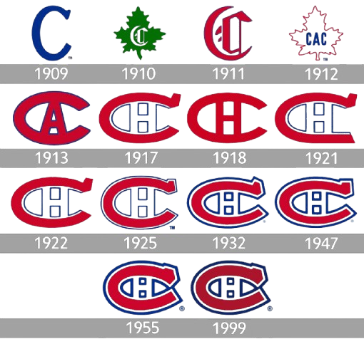

Histoire des Canadiens de Montréal
Les Canadiens de Montréal sont la plus ancienne équipe de hockey professionnelle au monde et l’une des franchises les plus historiques du sport professionnel. Fondée en 1909 et officiellement appelée le Club de Hockey Canadien, l’équipe (également connue sous le nom des Habitants, ou Habs pour faire court) est la seule franchise de la Ligue nationale de hockey (LNH) qui existait déjà avant la formation de cette dernière en 1917. Une des six équipes originales de la LNH, les Canadiens sont la seule équipe à n’avoir jamais quitté la ligue depuis la création de la ligue. Les Canadiens ont remporté 24 coupes Stanley — plus que toute autre organisation — et ont participé aux finales de la Coupe Stanley 35 fois, la dernière fois en 2021. Plus de 60 joueurs et membres du personnel des Canadiens ont été intronisés au Temple de la renommée du hockey, dont des figures légendaires comme Howie Morenz, Georges Vézina, Maurice « Rocket » Richard, Jacques Plante, Henri Richard, Jean Béliveau, Ken Dryden, Guy Lafleur et Patrick Roy.
Débuts du hockey à Montréal
Le hockey senior réglementé a fait son apparition à Montréal grâce aux étudiants de l’Université McGill, qui commencent à jouer au hockey sur la patinoire Victoria de Montréal en 1875. En 1880, ce groupe achève la rédaction d’un ensemble de règles devant être suivies par les équipes et en 1886, il participe à la mise en place de l’Association de hockey amateur du Canada (AHAC) qui comprend quatre équipes de Montréal et une équipe d’ Ottawa, une équipe de Québec se joignant à cette ligue en 1892. Une équipe de Montréal, le Hockey Club, remporte la première Coupe Stanley décernée en 1893. À une époque où n’importe quelle équipe canadienne peut, à tout moment de la saison, lancer un défi pour mettre la main sur la coupe, ce sont les équipes de Montréal qui s’approprient le nombre le plus important de victoires en Coupe Stanley, le Hockey Club la remportant à nouveau en 1894 puis en 1895 et les Victorias en 1895, 1896, 1897 et 1898.
En 1898, l’AHAC est remplacée par la Ligue canadienne de hockey amateur (LCHA). Au cours des deux premières saisons de cette nouvelle ligue, c’est‑à‑dire en 1899 et en 1900, ce sont les Shamrocks de Montréal qui sont champions et s’emparent de la Coupe Stanley. Le Montreal Hockey Club récupère la coupe grâce à ses victoires en 1902 et en 1903. En 1905, la LCHA est à son tour remplacée par l’Eastern Canada Amateur Hockey Association (ECAHA). Après avoir gagné et défendu la coupe avec succès en 1907 et 1908, les Wanderers de Montréal s’avèrent être l’équipe à battre.
L’ECAHA est dissoute en 1909 et reformée sous le nom d’Association canadienne de hockey (ACH). Exclus de la nouvelle ligue, les Wanderers de Montréal en créent une nouvelle, l’Association nationale de hockey (ANH). En février 1910, l’ACH fusionne avec l’ANH.
Canadiens de Montréal (ANH)
Les Canadiens de Montréal sont créés le 4 décembre 1909 par John Ambrose O’Brien, qui a nommé Jean‑Baptiste « Jack » Laviolette entraîneur et directeur général. En un mois, Jean‑Baptiste Laviolette recrute 15 joueurs pour l’équipe, qui joue son premier match en tant que membre de l’Association canadienne de hockey le 4 janvier 1910. Quelques jours plus tard, les Canadiens intègrent l’Association nationale de hockey nouvellement formée. Ils terminent leur première saison à la dernière place. Avant le début de leur deuxième saison, le Club athlétique canadien, une organisation sportive montréalaise à laquelle les Canadiens de John O’Brien ont emprunté leur nom, devient une franchise de l’Association nationale de hockey. Les Canadiens de John O’Brien cessent alors leur activité, le Club athlétique canadien conservant le nom des Canadiens de Montréal.
Les deux saisons suivantes sont décevantes, les Canadiens de Montréal terminant à la dernière place de la ligue. Toutefois, lors de la saison 1915‑1916, l’équipe est au sommet de sa forme et décroche sa première participation aux séries assortie d’une possibilité de gagner la Coupe Stanley. Sous la conduite de Newsy Lalonde, de Jack Laviolette et du gardien Georges Vézina, l’équipe remporte la Coupe Stanley pour la première fois en 1916 en battant en finale les Rosebuds de Portland de l’Association de hockey de la Côte du Pacifique.
Logo et surnom
En 1917, les Canadiens se présentent sur la glace avec de nouveaux uniformes, et un nouvel écusson — un « C » stylisé avec un « H » au milieu. Les lettres de l’écusson symbolisent le nouveau nom officiel de l’équipe, le Club de hockey canadien. Le « H » dans le logo signifie hockey, et non habitant, comme beaucoup le croient. Cette idée fausse semble provenir du propriétaire du Madison Square Garden, Tex Rickard, qui a déclaré par erreur à un journaliste en 1924 que le « H » signifiait habitant. Ce mot — le nom des colons propriétaires de terres en Nouvelle-France — était alors un surnom courant pour l’équipe. La première référence connue aux Canadiens sous le nom d’« habitants » a été publiée dans Le Devoir le 9 février 1914, dans la description d’un match contre une équipe de Toronto. (« Sans contredit les “Habitants” eurent l’avantage continuellement. ») On pense que l’association du terme avec le club provient du fait que l’équipe était présentée comme le club de hockey français de la ville, par opposition à l’équipe anglaise, les Wanderers de Montréal. Au cours des premières années, de nombreux fans des Canadiens ont même manifesté leur affiliation au club en assistant aux matchs en portant la tenue traditionnelle des habitants, soit des tuques, des mocassins et des ceintures fléchées aux couleurs vives.
Plus récemment, cependant, le terme habitant a perdu la faveur des Canadiens français, qui le considèrent comme un mot péjoratif signifiant généralement « paysan grossier ». Comme l’explique Mark Abley, « en français contemporain, si vous avez des “manières d’habitant”, vous êtes un rustre. Si vous voulez dénigrer les chansons folkloriques traditionnelles de la province, appelez-les “musique d’habitant”. En tournant le dos à l’Église catholique et au passé agricole, les Québécois ont rejeté bon nombre des symboles qui leur étaient autrefois chers, dont les habitants. » (Voir Habitants et le Québec.) Abley a également expliqué que la version abrégée du terme, habs, « ne souffre pas des associations négatives de “habitants” ».
D’autres surnoms populaires pour l’équipe sont apparus au fil des ans, notamment le Grand club, le CH (abréviation de Club de hockey), les Glorieux, le Bleu Blanc Rouge, et la Sainte-Flanelle.
Canadiens de Montréal (LNH)
Les Canadiens entament la saison 1917‑1918 en tant qu’équipe fondatrice de la Ligue nationale de hockey (LNH). Le CH perd le premier championnat de la LNH en 1918 face aux Arenas de Toronto, qui devient la première équipe de la LNH à remporter la Coupe Stanley. Durant les séries éliminatoires de la Coupe Stanley 1919, les Canadiens remportent le championnat de ligue face aux Sénateurs, mais ne réussissent pas, cette année‑là, à mettre la main sur la Coupe Stanley. En effet, l’épidémie de grippe espagnole met à mal de nombreux joueurs des deux équipes, les Canadiens et leurs rivaux, les Metropolitans de Seattle de l’Association de hockey de la côte du Pacifique, la série est interrompue sans qu’aucun vainqueur soit désigné et la Coupe Stanley n’est pas attribuée.
Très tôt dans l’histoire de la LNH, les Canadiens se bâtissent la réputation de pratiquer un jeu inspiré s’appuyant sur la vitesse et la puissance offensive. Outre Joe Malone et Aurèle Joliat, l’équipe de cette époque peut s’appuyer sur Howie Morenz, le joueur le plus brillant des années 1920 et 1930. Bien que les Canadiens aient manqué les séries éliminatoires de 1920 à 1922, ils retrouvent les joutes d’après la saison régulière dès 1922‑1923. Toutefois, ces matchs éliminatoires sont marqués par une controverse, le capitaine du CH, Sprague Cleghorn, étant suspendu par sa propre équipe pour une mise en échec aussi sournoise que déloyale de Lionel Hitchman des Sénateurs d’Ottawa. Cette année‑là, Ottawa remporte le championnat de la ligue ainsi que la Coupe Stanley. Cependant, dès la saison suivante, le Canadien affiche une excellente forme et un bien meilleur comportement. Au printemps 1924, les Canadiens de Montréal remportent leur première Coupe Stanley en tant qu’équipe de la LNH.
En 1925, le CH est une nouvelle fois désigné champion de la ligue, sans avoir toutefois obtenu cet honneur sur la glace. En effet, Hamilton, la meilleure équipe de la ligue, est suspendue après que ses joueurs ont exigé d’être payés pour jouer les séries éliminatoires, lançant ainsi la première grève de l’histoire de la LNH. Cependant, les Canadiens échouent en finale de la Coupe Stanley, battus par les Cougars de Victoria qui deviennent la dernière équipe extérieure à la LNH à remporter la coupe. La saison suivante, après une série de 12 défaites, le CH termine dernier.
En 1926‑1927, la LNH s’agrandit et comprend désormais dix équipes, trois nouvelles franchises la rejoignant après la dissolution de la Western Hockey League. Cette saison-là, les Canadiens terminent deuxièmes de la Division canadienne, mais perdent à nouveau en demi‑finale de la Coupe Stanley, cette fois face aux Sénateurs d’Ottawa. Après cet échec, l’équipe commence la saison 1927‑1928 fermement décidée à terminer première de la ligue. Effectivement, la saison régulière s’avère triomphale avec, notamment, une série de 19 victoires consécutives. Toutefois, un but marqué en prolongation par l’autre franchise de Montréal, les Maroons, scelle le sort des Canadiens qui sont éliminés et ne parviennent pas à atteindre la finale de la Coupe Stanley.
En 1928‑1929, l’équipe connaît une saison considérée comme l’une des plus brillantes de son histoire, ne perdant que 7 matchs, en remportant 22 en blanchissant l’équipe adverse, et concluant la saison sur une série de 8 parties victorieuses. Toutefois, cette réussite exceptionnelle en saison régulière ne se prolonge pas lors des séries éliminatoires. En effet, le CH ne réussit pas à se qualifier pour la finale de la Coupe Stanley, perdant sa série face aux Bruins de Boston.
Les années 1930
Les Canadiens entament les années 1930 sur une note extrêmement positive. En effet, ils remportent la Coupe Stanley en 1930 et en 1931, devenant ainsi, pour la première fois de leur histoire, doubles tenants du titre. En 1931‑1932, l’équipe décroche son quatrième titre de la Division canadienne en cinq saisons, mais perd en demi‑finale contre les Rangers de New York. Cet échec marque pour le CH le début d’une tendance négative. L’année suivante, l’équipe passe la première moitié de la saison à la dernière place de la Division canadienne et termine finalement à la troisième place ex æquo. En séries éliminatoires, l’équipe est battue dès les quarts de finale, une nouvelle fois par les Rangers de New York. Ce départ rapide en vacances en deuxième partie de saison va se reproduire en 1933‑1934, cette fois face aux Blackhawks de Chicago.
La saison suivante, Léo Dandurand, le directeur général des Canadiens, effectue 15 échanges. En dépit d’une première moitié de saison régulière émaillée de nombreuses pertes, l’équipe réussit à engranger suffisamment de points lors de la deuxième partie pour terminer troisième de la Division canadienne et se qualifier pour les séries éliminatoires. Cependant, les matchs éliminatoires tournent court, en raison d’une série perdue, une nouvelle fois, contre les Rangers. À la suite de cette défaite, les Canadiens de Montréal sont vendus à la Canadian Arena Company. Afin de tenter de renouer avec le succès, les nouveaux propriétaires échangent des joueurs, sans toutefois rencontrer beaucoup de réussite. Le Canadien termine la saison 1935‑1936 à la dernière place et, pour la première fois en dix ans, ne réussit pas à se qualifier pour les séries éliminatoires.
L’ancienne vedette du CH, Howie Morenz, revient au club pour la saison 1936‑1937. Cependant, cette nouvelle période au Canadien va tourner court. En effet, le 28 janvier 1937, il se casse une jambe durant un match et décède à l’hôpital le 8 mars à la suite de complications. Howie Morenz soudainement disparu, l’équipe a le moral au plus bas et est facilement éliminée en demi‑finale de la Coupe Stanley par les Red Wings de Detroit, la saison suivante étant du même tonneau, puisque le CH est éliminé en quart de finale par les Blackhawks de Chicago. Les Canadiens rencontrent à nouveau Detroit en séries éliminatoires lors de la saison 1938‑1939, pour un résultat identique.
Maurice Richard
Maurice Richard, dit « le Rocket », lors de l'une de ses célèbres montées au filet.
(avec la permission du Temple de la renommée des sports du Canada)
En 1942‑1943, la LNH est réduite à seulement six équipes, marquant le début de la période connue sous le nom de période des « Six équipes originales de la LNH ». Une nouvelle ère s’ouvre également alors pour le Canadien, avec l’arrivée de Maurice Richard comme recrue. Surnommé le « Rocket », il remplace Joe Benoit pour former la célèbre « Punch Line » en compagnie de Toe Blake et Elmer Lach. Avec Bill Durnan, l’un des meilleurs gardiens de la LNH, devant les filets, le Tricolore du milieu des années 1940 connaît une période de succès sans précédent. La saison 1943‑1944 s’achève en point d’orgue lorsque l’équipe soulève la Coupe Stanley. La saison 1944‑1945 voit le CH terminer en tête de la ligue avec la meilleure attaque, la meilleure défense et le plus grand nombre de minutes de pénalités; cette année‑là, Maurice Richard devient également le premier joueur de la LNH à marquer 50 buts en une seule saison. Bien que les Canadiens ne réussissent pas à mettre la main sur la Coupe Stanley en 1945, 1947 et 1949 et n’atteignent même pas les séries éliminatoires en 1948, ils s’imposent tout de même en 1946.
Les années 1950
Les saisons 1949‑1950 et 1951‑1952 du CH se terminent par des défaites. Toutefois, Jacques Plante effectue ses débuts de gardien de but en LNH en 1952‑1953, et joue un rôle essentiel pour permettre au Tricolore de terminer deuxième de la ligue cette année‑là. Lors du sixième match de la finale 1953, Elmer Lach marque le but décisif qui rompt l’égalité entre les deux équipes en prolongation et conduit les Canadiens à une septième victoire en Coupe Stanley. En dépit d’un échec en 1954, l’équipe espère bien reconquérir la coupe en 1955. Toutefois, les choses ne se passent pas vraiment comme prévu, en raison, notamment, des événements de mars 1955. Le 13 mars, lors d’un match contre les Bruins de Boston, Maurice Richard frappe violemment un défenseur de l’équipe adverse, Hal Laycoe, en représailles, après que ce dernier lui eut asséné un coup de bâton à la tête. Le juge de ligne, Cliff Thompson, tente d’intervenir et de maîtriser Maurice Richard qui lui envoie un coup de poing tandis que lui‑même continue d’être frappé par son adversaire. Clarence Campbell, le président de la LNH, suspend alors le « Rocket » pour le restant de la saison, y compris les séries éliminatoires. Les partisans de Montréal protestent, estimant que la suspension est bien trop longue et que la lourdeur de la peine est motivée par les origines canadiennes‑françaises du joueur vedette du Tricolore. L’apparition de Clarence Campbell à Montréal le 17 mars provoque une émeute au forum de Montréal, que l’on appelle plus tard « émeute du Forum » ou « émeute Maurice Richard ». On considère que cet événement marque la montée des tensions ethniques au Québec et qu’il constitue un déterminant important de la Révolution tranquille québécoise qui s’annonce.
Le joueur accepte sa punition et promet de revenir avec les Canadiens l’année suivante, en mettant cette fois la main sur la Coupe Stanley. Il tient sa promesse! La saison 1955‑1956 marque pour le CH le début d’une période exceptionnelle de succès restée sans équivalent dans l’histoire du hockey professionnel. Cette année‑là, le Grand Club, avec à la barre un nouvel entraîneur, Hector « Toe » Blake, termine en tête de la ligue avec 24 points d’avance sur son suivant en s’appuyant sur deux lignes inarrêtables : en attaque, Jean Béliveau, Maurice Richard et Bert Olmstead et en deuxième ligne, Henri Richard, Bernard Geoffrion et Dickie Moore. Jacques Plante est également élu meilleur gardien de but de la LNH. Tous ces ingrédients réunis amènent l’équipe à atteindre, pour la première fois, la barre des 100 points en saison régulière. Le CH établit également, cette même année, avec huit trophées, un record de victoires en Coupe Stanley, un neuvième titre venant s’ajouter à ce palmarès l’année suivante, en 1957.
Henri Richard
Henri Richard portant la Coupe Stanley après la victoire de Montréal contre Chicago en 1971. Il a remporté la coupe à 11 reprises, soit plus que tout autre joueur.
(avec la permission du Temple de la renommée des sports du Canada)
La saison 1957‑1958 est marquée par l’émergence de jeunes vedettes dans l’équipe. Dickie Moore, surnommé « Digging Dickie », devient meilleur pointeur de la LNH, tandis que le jeune frère de Maurice Richard, que l’on appelle « Pocket Rocket », termine à la deuxième place de ce classement. Le Tricolore réalise, à l’occasion de cette saison exceptionnelle, le deuxième triplé de l’histoire de la Coupe Stanley, un exploit que le club va encore amplifier en remportant un quatrième puis un cinquième championnat d’affilée en 1958‑1959 et 1959‑1960. La finale de la Coupe Stanley 1960 s’avérera le dernier match de Maurice Richard, le Rocket raccrochant définitivement les patins à la fin de la saison.
Canadiens de Montréal, 1950s
Les Canadiens de Montréal et les Bruins de Boston, ca. 1950 (© Jerry Coli/Dreamstime)
50023921 © Jerry Coli | Dreamstime.com
Les années 1960
La mainmise du Canadien de Montréal sur la Coupe Stanley prend fin en 1961 lorsque l’équipe est battue en demi‑finale par Chicago. En dépit de ses excellentes prestations durant la saison régulière 1961‑1962, le Tricolore perd à nouveau en demi‑finale, encore une fois face à Chicago, un échec qui se répète les deux années suivantes, cette fois contre Toronto. À l’été 1964, la direction du CH est remaniée en profondeur et la franchise remporte ses 13e et 14e Coupes Stanley en 1965 et 1966.
En 1967‑1968, la LNH connaît une nouvelle expansion. Face à une concurrence accrue, les Canadiens vivent un début difficile, se classant derniers de la ligue après 33 matchs. Toutefois, à la fin de la saison, il retrouve leur place traditionnelle au sommet de la ligue et de la Division Est. Jean Béliveau joue un rôle non négligeable dans ce succès, marquant, au cours de cette saison, son 400e but et dépassant la barre symbolique des 1 000 points en carrière. Le Grand Club prouve que sa puissance est intacte en remportant sa 15e Coupe Stanley contre les Blues de Saint Louis, l’une des nouvelles équipes ayant intégré la LNH. En 1969, le Tricolore rencontre à nouveau Saint Louis en séries éliminatoires, jouant ses matchs à domicile, sous la houlette de l’entraîneur Claude Ruel, dans un forum de Montréal rénové.
Jean Béliveau
Canadien de Montréal Jean Béliveau, #4. (© Jerry Coli/Dreamstime)
50023758 © Jerry Coli | Dreamstime.com
Les années 1970
Après avoir remporté sa 16e Coupe Stanley l’année précédente, le CH entame la saison 1969‑1970 avec beaucoup d’espoir. Cependant, l’équipe doit faire face à de nombreuses blessures qui éloignent de la patinoire un certain nombre de vedettes de la formation comme Jean Béliveau, Henri Richard, Jean‑Claude Tremblay, John Ferguson et Serge Savard. En outre, Jacques Laperrière et John Ferguson sont suspendus et Gilles Tremblay décide de prendre sa retraite en raison d’une maladie. Dans ce contexte, le classement du Tricolore s’en ressent et c’est des gradins que les joueurs regardent les séries éliminatoires 1970. La saison suivante est la dernière de Jean Béliveau et de John Ferguson, tout en étant marquée par l’arrivée de la recrue Guy Lapointe. Au milieu de la saison, Al MacNeil prend la barre en tant que nouvel entraîneur de l’équipe et, avec le nouveau gardien Ken Dryden, il conduit l’équipe à une 17e Coupe Stanley, la 10e de Jean Béliveau comme joueur bleu‑blanc‑rouge. Peu après cette victoire, Al MacNeil est remplacé par Scotty Bowman au poste d’entraîneur.
Ken Dryden
Gardien de but pour les Canadiens de Montréal Ken Dryden.
45540214 © Jerry Coli | Dreamstime.com
Ce dernier devient un entraîneur de légende du Canadien, dirigeant une équipe dont le jeu s’appuie sur la vitesse, le pointage et la défense. Quoique l’équipe ne réussisse pas à décrocher la coupe en 1972 à l’occasion des premières séries éliminatoires de Guy Lafleur, le Grand Club remporte sa 18e Coupe Stanley en 1973, à laquelle viendront s’ajouter quatre victoires successives de 1974‑1975 à 1978‑1979. C’est durant cette période où les succès se multiplient que Guy Lafleur émerge comme l’un des meilleurs joueurs de la LNH et remporte de nombreux prix, notamment les trophées Conn‑Smythe, Art‑Ross et Hart. S’il est vrai que la finale de la Coupe Stanley 1979 se termine dans la joie d’une 22e victoire du CH, il n’en demeure pas moins qu’elle est empreinte d’une certaine tristesse puisqu’elle marque la fin d’une époque et constitue le dernier match d’Yvan Cournoyer, de Ken Dryden, de Jacques Lemaire et de l’entraîneur Scotty Bowman.
Les années 1980
Au cours des années 1980, si les Canadiens demeurent compétitifs, ils ne dominent plus une LNH rendue plus concurrentielle par le nombre de franchises. Bien que la franchise de Montréal domine le classement du pointage grâce à des joueurs vedettes comme Guy Lafleur, Pierre Larouche, Steve Shutt et Pierre Mondou et au retour de l’entraîneur Claude Ruel, le départ des joueurs de premier plan de la décennie précédente se fait ressentir, et l’équipe termine la saison 1979‑1980 à la troisième place. Pour la première fois depuis cinq ans, le CH finit l’année sans garnir l’armoire à trophées d’une Coupe Stanley supplémentaire. Le directeur général, Irving Grundman, tente de trouver la formule gagnante en introduisant de nouveaux éléments dans la formation, et recrute Doug Wickenheiser en première position du repêchage d’entrée de 1980 en vue de la saison suivante. En 1980‑1981, en dépit d’une saison régulière réussie, le Tricolore est balayé en première ronde des séries éliminatoires par les Oilers d’Edmonton. Pour la saison 1981‑1982, Bob Berry remplace Claude Ruel comme entraîneur et conduit l’équipe à son huitième titre consécutif de champion de division. Toutefois, c’est l’équipe classée quatrième de la division, les Nordiques de Québec, qui anéantit les espoirs de Coupe Stanley du CH en l’éliminant dès la première ronde des séries.
Le règne de huit ans des Canadiens comme champions de division prend fin lors de la saison 1982‑1983, l’équipe ne terminant alors que deuxième et ne dépassant pas la première ronde des séries éliminatoires pour la troisième année consécutive. Ces mauvais résultats entraînent le licenciement du directeur général Irving Grundman et son remplacement par Serge Savard. Au cours de la saison 1983‑1984, la situation se dégrade encore, puisque l’équipe pointe à la quatrième place de sa division; dans ce contexte, à la fin du mois de février, Bob Berry est remplacé derrière le banc par l’ancien joueur Jacques Lemaire. Le CH connaît alors sa première saison régulière perdante depuis 33 ans. En effet, après avoir battu les Bruins de Boston et les Nordiques de Québec, la franchise de Montréal est défaite par les Islanders de New York en finale d’association.
Patrick Roy
Gardien de but pour les Canadiens de Montréal Patrick Roy #33. (© Jerry Coli/Dreamstime)
41315123 © Jerry Coli | Dreamstime.com
À l’occasion du repêchage de l’été 1984, Serge Savard recrute Patrick Roy; toutefois, ce dernier ne jouera qu’une seule période au cours de la saison 1984‑1985 qui marque véritablement la fin d’une époque puisque Guy Lafleur annonce sa retraite le 26 novembre 1984. La saison régulière suivante est relativement médiocre, le Tricolore terminant deuxième de sa division. Toutefois, avant le début des séries éliminatoires, l’entraîneur Jean Perron enferme l’équipe dans un hôtel de Montréal pour tenter de mobiliser toutes les énergies en vue des rondes à venir. Le pari s’avère payant : le Canadien met la main, en 1986, sur sa 23e Coupe Stanley sous l’impulsion de prestations de haute volée de son gardien recrue Patrick Roy. Cette année‑là, le CH bat en finale les Flames de Calgary 4‑1 et, du haut de ses 20 ans, Patrick Roy remporte le trophée Conn Smythe récompensant le joueur le plus utile des séries éliminatoires, devenant ainsi le plus jeune hockeyeur à décrocher cette distinction. Jusqu’en 1988‑1989, lorsqu’ils rencontrent à nouveau les Flames de Calgary en finale avec Pat Burns derrière le banc, les Canadiens de Montréal ne réussissent pas à dépasser la deuxième ronde des séries éliminatoires de la Coupe Stanley. Toutefois, cette année-là, ce sont les Flames qui remportent la victoire, devenant la première équipe visiteuse à remporter la Coupe Stanley sur la glace du forum de Montréal.
Les années 1990
Les Canadiens de Montréal entament les années 1990 comme l’une des meilleures équipes de la LNH. Cela n’empêche toutefois pas l’entraîneur, Pat Burns, de quitter l’équipe pour passer derrière le banc de la franchise rivale des Maple Leafs de Toronto à la fin des séries éliminatoires de 1992. Jacques Demers prend alors les rênes de l’équipe pour la saison 1992‑1993 à un moment qui n’aurait pu être mieux choisi. En effet, à la surprise générale, le CH remporte, cette année‑là, sa 24e Coupe Stanley, battant en finale les Kings de Los Angeles de Wayne Gretzky 4‑1. Mais ce qui va surtout marquer les esprits au cours de ce parcours, c’est la série exceptionnelle de dix victoires consécutives en prolongation obtenue par le Tricolore. Encore une fois, c’est son spectaculaire gardien Patrick Roy qui remporte, cette saison, son deuxième trophée Conn Smyth qui conduit les Canadiens à la victoire.
Cette coupe sera la dernière que le CH décroche sur la glace du forum de Montréal. L’année suivante, bien qu’il atteigne les séries éliminatoires, il est rapidement sorti de la compétition par les Bruins de Boston. La saison 1994‑1995 est écourtée par un lock‑out, et les Canadiens ne se qualifient pas pour les séries éliminatoires pour la première fois en 25 ans. Lors de la saison suivante, l’équipe ne réussit pas à améliorer ses performances et une nouvelle équipe de direction est mise en place avec Réjean Houle comme directeur général de l’équipe et Mario Tremblay comme nouvel entraîneur‑chef. La saison régulière est à peine commencée depuis quelques mois que Patrick Roy est échangé à l’Avalanche du Colorado.
Le dernier match joué par le Canadien au forum de Montréal, une enceinte où il se produit régulièrement depuis 1924, se déroule le 11 mars 1996. Cinq jours plus tard, la franchise de Montréal joue son match suivant à domicile au Centre Molson, devenu depuis le centre Bell, le plus grand aréna de la LNH avec ses 21 287 sièges. Ce premier match à domicile est un succès, les Canadiens battant les Rangers de New York 4‑2. Les deux parcours suivants de l’équipe en séries éliminatoires sont toutefois de courte durée, puisqu’elle perd en première ronde aussi bien en 1996 qu’en 1997.
En décembre 1997, le Canadien joue son 5 000e match en LNH. Cependant, à la fin de la saison régulière, l’équipe a glissé à la septième place de l’Association de l’Est et ne se rend pas au‑delà de la deuxième ronde lors des séries éliminatoires. Cet échec ne marque que le début des problèmes du Grand Club. Le mois de décembre 1998 est marqué par une série de 11 matchs sans victoire et l’équipe termine la saison régulière en dehors des places qualificatives pour les séries éliminatoires, marquant le total de points le plus faible depuis 40 ans.
De 2000 à 2010
Lors de la saison 1999‑2000, le CH continue à afficher des performances médiocres et à enregistrer de mauvaises nouvelles. L’équipe est en proie à de nombreuses blessures et termine la saison régulière sans parvenir à se qualifier pour les séries. En mai 2000, Maurice Richard décède et plus de 100 000 personnes assistent à une cérémonie commémorative publique au centre Molson.
Statue de Maurice Richard
Statue de Maurice « le Rocket » Richard à Gatineau, Québec 7 novembre, 2010. (© Paul Mckinnon/Dreamstime)
17330177 © Paul Mckinnon | Dreamstime.com
En 2001‑2002, l’équipe atteint les séries éliminatoires pour la première fois depuis quatre ans. Lors de la première ronde, elle écrase les Bruins de Boston, mais est éliminée dès la deuxième ronde par les Hurricanes de la Caroline. En 2002‑2003, les Canadiens ratent les séries éliminatoires pour la quatrième fois en cinq ans. Dans l’espoir de relancer une équipe qui rencontre les pires difficultés, l’ancien Canadien Bob Gainey est embauché comme nouveau directeur général de l’équipe, marquant ainsi le début de ce qu’il est convenu d’appeler l’ère Gainey.
Cette nouvelle période démarre plutôt en douceur, même si le CH se retrouve sous les feux des projecteurs en disputant, le 22 novembre 2003, le premier match en extérieur de la LNH contre les Oilers d’Edmonton. Les Canadiens réussissent à se qualifier pour les séries éliminatoires, mais sont éliminés en deuxième ronde par le Lightning de Tampa Bay, le futur vainqueur de la Coupe Stanley. L’équipe connaît le même sort lors des séries éliminatoires 2006 contre les Hurricanes de la Caroline, la saison 2004‑2005 ayant été annulée en raison d’un lock‑out.
Pour commémorer la centième saison du Tricolore en 2008‑2009, la LNH rend hommage à l’illustre l’histoire de ce club. En 2009, Montréal accueille le match des étoiles et, après la fin de la saison régulière, le repêchage d’entrée de la LNH. Même si tous les yeux sont tournés, lors de cette saison de LNH, vers le Tricolore, les résultats de l’équipe sur la glace ne peuvent être qualifiés que de moyennement bons. Après avoir terminé huitième de l’Association de l’Est avec une fiche de 41‑30‑11, le Canadien est balayé lors de la première ronde des séries éliminatoires par les Bruins de Boston.
Lors de la saison suivante, en 2009‑2010, les partisans bleu‑blanc‑rouge espèrent que leur équipe va de nouveau se couvrir de gloire sur la patinoire. Jacques Martin officie désormais derrière le banc en tant qu’entraîneur, et plusieurs joueurs sont échangés dans l’espoir de bâtir progressivement une formation de joueurs de premier plan. Les Canadiens entrent dans l’histoire le 28 décembre 2009 lorsque leur avant, Mike Cammalleri, marque le 20 000e but de la franchise contre les Sénateurs d’Ottawa. Après une saison régulière difficile qui les voit se qualifier d’extrême justesse à la huitième place pour les séries éliminatoires, les Canadiens surprennent tout le monde en obligeant les Capitals de Washington à jouer un septième match lors d’une première ronde que le CH finit par emporter. Lors de la ronde suivante, la franchise de Montréal est opposée aux Penguins de Pittsburgh de Sidney Crosby, champions de la Coupe Stanley en titre. Encore une fois, l’équipe surprend en forçant la tenue d’un septième match et en obtenant sa qualification pour sa première finale d’association depuis 1993. Cependant, ce beau parcours en séries éliminatoires se termine face aux Flyers de Philadelphie qui éliminent le Tricolore en cinq matchs. En dépit des brillantes performances de son gardien Jaroslav Halak lors des séries éliminatoires, le Canadien l’échange aux Blues de Saint Louis en juin 2010, faisant de Carey Price le gardien de la franchise.
De 2011 à 2019
Il n’y a pas grand-chose à retenir pour les partisans de la saison 2010‑2011. Le 20 février 2011, les Canadiens participent à la deuxième Classique Héritage organisée par la LNH, un match en plein air joué devant 41 000 spectateurs au stade McMahon de Calgary que le Tricolore perd 4‑0 face aux Flames de Calgary. Un incident effrayant se produit ultérieurement dans la saison. Poussé par le défenseur des Bruins de Boston Zdeno Chára, l’attaquant des Canadiens, Max Pacioretty, heurte violemment un montant, subissant une grave commotion cérébrale et se fracturant une vertèbre. Durement blessé, il manque le restant de la saison, mais revient en parfaite condition physique l’année suivante, marquant 33 buts et offrant 32 passes décisives lors de la saison 2011‑2012. Le rétablissement de l’attaquant du CH constitue l’une des rares satisfactions pour l’équipe qui, cette année‑là, voit le directeur général et l’entraîneur en chef tous deux remerciés, tandis que sur la glace, le Tricolore termine dernier de sa division et de l’association, ne réussissant pas à se qualifier pour les séries éliminatoires pour la première fois depuis 2006‑2007.
Après une campagne infructueuse en 2011‑2012, le club embauche Marc Bergevin et Michel Therrien, pour occuper respectivement les postes de directeur général et d’entraîneur en chef. Lors de la saison 2012‑2013, amputée par un lock‑out, P.K. Subban remporte le trophée commémoratif James Norris qui récompense chaque année le meilleur défenseur de la ligue.

P.K. Subban
Ancien défenseur des Canadiens de Montréal P.K. Subban #76. Image du 12 janvier 2012. (© Jerry Coli/Dreamstime)
45183169 © Jerry Coli | Dreamstime.com
En 2013‑2014, la saison régulière se déroule de nouveau normalement, et les Canadiens finissent avec une fiche de 46‑28‑8 pour finalement progresser jusqu’à la finale de l’Association de l’Est avant de finir par lâcher prise face aux Rangers de New York dans un sixième match âprement disputé.
L’année suivante, en grande partie grâce aux prestations exceptionnelles du gardien Carey Price, le Canadien termine en tête de la Division Atlantique et finit la saison régulière avec 110 points, un record depuis 1988‑1989. Bien que l’équipe soit éliminée en deuxième ronde des séries éliminatoires par le Lightning de Tampa Bay, les brillantes performances du gardien bleu‑blanc‑rouge sont saluées par les trophées Vezina, Hart et Ted Lindsay.Avant le début de la saison 2015-2016, Max Pacioretty devient le 29e capitaine de l’équipe dans l’histoire de la franchise. Mais le désastre s’abat sur l’équipe dès le début de la campagne. Lors d’un match contre les Oilers d’Edmonton le 29 octobre 2015, le gardien Carey Price se blesse au genou. Il revient dans l’enceinte du but le 20 novembre, mais sa blessure s’aggrave quelques jours plus tard lors d’un match contre les Rangers de New York. Casey Price sera finalement absent de la patinoire jusqu’à la fin de la saison régulière, et les performances de l’équipe s’en ressentiront fortement. Les Canadiens finissent 13es de l’Association de l’Est et manquent les matchs de ronde éliminatoire.
Hors saison, le 29 juillet 2016, les Canadiens surprennent le monde du hockey en échangeant leur arrière dynamique P.K. Subban pour le pilier de ligne bleue Shea Weber des Predators de Nashville. L’échange est controversé, car Subban a remporté le trophée Norris en 2013 en tant que meilleur défenseur de la ligue et était très apprécié par la plupart des supporters pour son charisme et sa générosité à l’égard de la communauté – en particulier pour son travail au sein de l’Hôpital de Montréal pour enfants, auquel il a fait don de 10 millions de dollars en 2015.
En 2016-2017, guidés par un Carey Price de nouveau en pleine forme et une campagne de 35 buts par leur capitaine Max Pacioretty, les Canadiens rebondissent après leurs résultats médiocres de la dernière saison et finissent au sommet de la division de l’Atlantique avec le score impressionnant de 47–26 –9. Malgré leur succès sur la saison régulière, les Canadiens perdent en six matchs face aux Rangers de New York lors de la première série de l’après-saison.
Après la conclusion de la saison 2016-2017, les Canadiens échangent Mikhail Sergachev, leur espoir de ligne bleue numéro un, contre le centre Jonathan Drouin des Lightning de Tampa Bay, qu’ils font rapidement signer pour un contrat de six ans. La direction pense alors que les talents de buteur de Drouin allaient faire la différence à l’avant, mais non seulement les Canadiens auront du mal à marquer durant la saison 2017-2018, mais ils auront aussi du mal à éviter que le palet pénètre dans leur propre filet. Montréal termine la saison avec le troisième plus faible nombre de buts pour et le cinquième plus grand nombre de buts contre de la ligue.
Durant l’intersaison, les Canadiens font plusieurs changements. Ils échangent ainsi Alex Galchenyuk contre Max Domi des Coyotes d’Arizona et sélectionnent Jesperi Kotkaniemi, troisième au classement général de la séance de sélection de la LNH. En septembre 2018, ils échangent le capitaine Max Pacioretty contre Tomáš Tatar et le novice Nick Suzuki des Golden Knights de Vegas, ainsi qu’un choix de deuxième ronde en 2019. Cependant, la saison 2018-2019 est tout aussi décevante, puisque l’équipe ne réussit toujours pas à atteindre les séries éliminatoires.
Lors de la séance de sélection 2019 de la LNH en juin, les Canadiens utilisent leur choix de premier tour pour sélectionner l’ailier droit américain de 18 ans Cole Caulfield. Ce joueur petit et rapide a marqué 72 buts et 100 points en 64 matchs avec l’équipe américaine des moins de 18 ans en 2018-2019. Il était classé numéro 8 par le Bureau central de dépistage de la LNH avant le repêchage, mais il était encore disponible pour les Canadiens, qui détenaient le 15e choix, en raison des préoccupations relatives à sa taille (5 pieds 7, 163 lb).
Propriété de la franchise
Au cours des années 2000, la franchise change deux fois de propriétaire. Depuis 1978, elle était détenue par les Brasseries Molson; toutefois, la situation évolue lorsqu’en 2001, l’homme d’affaires américain George Gillett rachète 80,1 % des parts de l’équipe. Cette transaction se signale par le fait qu’aucun acheteur canadien ne se présente pour racheter le CH, à une période où le dollar canadien est faible et où la majorité des équipes au pays rencontre des difficultés financières. George Gillett réalise une excellente affaire en rachetant l’équipe et l’aréna pour 275 millions de dollars puisqu’il les revend, en 2009, aux frères Molson pour 500 millions de dollars, marquant le début d’une nouvelle période au cours de laquelle c’est la famille Molson qui détient 100 % de la franchise. (Voir aussi John Molson; John Molson, Jr; Molson Coors Brewing Company.)